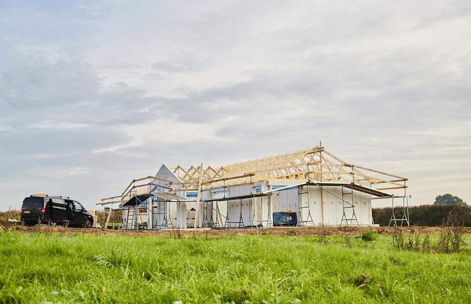
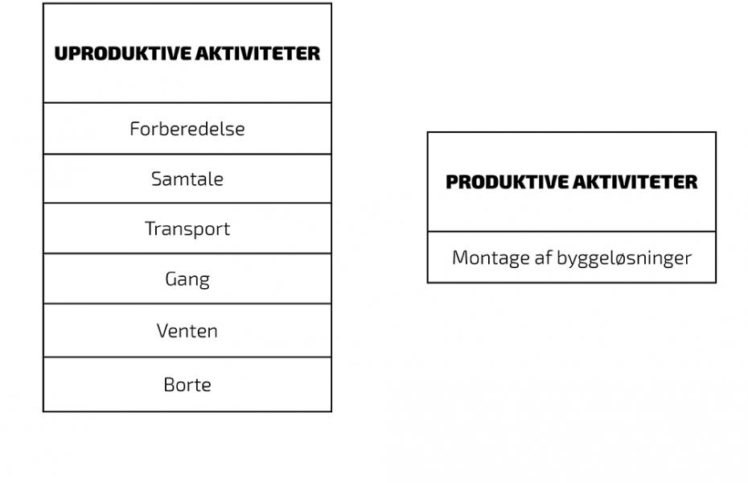
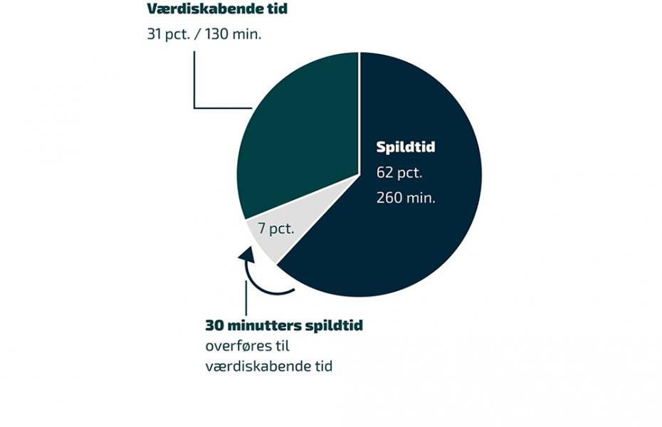

66 pct. af arbejdsdagen på byggepladsen er spildtid
Ca. fem timer går dagligt med ”uproduktive” aktiviteter på byggepladsen – og det er ikke håndværkernes skyld. Et omfattende studie fra Institut for Ingeniørvidenskab ved Aarhus Universitet kaster lys over de forskellige udfordringer, byggefirmaer og håndværksvirksomheder møder dagligt. Studiets konklusion er, at for at øge effektiviteten på byggepladsen er det ikke nødvendigt at arbejde hurtigere – dog skal man arbejde smartere. Her kan du læse mere om, hvad de største udfordringer er, og hvordan vi hos NG ZINK kan hjælpe din virksomhed med at skrue op for produktiviteten og styrke indtjeningen.
Forskere fra Institut for Ingeniørvidenskab ved Aarhus Universitet har fulgt 1000 timers arbejde på fire forskellige byggepladser for at måle håndværkernes produktivitet under adskillige renoveringsprojekter. Ifølge undersøgelsen går ”66 procent af dagen med ting, der ikke bidrager til selve byggearbejdet […]. I stedet går arbejdsdagen med blandt andet oprydning, transport og ventetid.”
Studiet peger på, at det ikke er håndværkernes skyld, at fem timer dagligt bruges på ”uproduktive” aktiviteter under renoveringsprojekter. ”Det er ikke, fordi håndværkerne ikke laver noget. De arbejder hårdt og har en stor faglig stolthed, men der bliver spildt meget tid.” (Institut for Ingeniørvidenskab).
Dårlig planlægning og kommunikation mellem fagene samt ventetid og transport er nævnt som de primære årsager til den lave produktivitet under renoveringsprojekter. Selvom håndværkere allerhelst ville lave håndværksarbejde på byggepladsen, går der mange timer med andre arbejdsrelaterede aktiviteter, der ikke er værdiskabende. Det kræver små ændringer fra ledelsens side for at forbedre situationen.

Produktionstid og spildtid
Produktionstid er defineret som tid brugt på aktiviteter, der er værdiskabende og permanent forøger værdien af bygningen. Det kan fx være montering af nye vinduer, at mure en væg op eller montering af tagrender.
Men arbejdet på byggepladsen involverer også andre aktiviteter inkl. samtale, koordinering, transport, ventetid, forberedelse, klargøring og rengøring – aktiviteter, som studiet definerer som ”spildtid”. Værdiskabende produktionsaktiviteter (fx montage af en byggeløsning) kan selvfølgelig ikke ske uden mange af disse ”uproduktive aktiviteter”. Men alt unødvendig spildtid fører til dyrere byggeri og lønspild.
Små ændringer i planlægnings- og forberedelsesfasen kan dog gøre en svimlende forskel og give kæmpe besparelser for byggefirmaer. For at øge produktiviteten er det ikke nødvendigt at arbejde hurtigere på byggepladsen; derimod skal man arbejde smartere. Det estimeres, at produktiviteten kan øges med 50-60%, hvis man optimerer arbejdsprocesserne i planlægnings- og koordineringsfasen.
Selvom ingen er i tvivl om de væsentlige økonomiske fordele ved at mindske tid brugt på uproduktive aktiviteter, er der – i de fleste firmaer – ikke gjort meget for at reducere tiden brugt på koordinering, planlægning og klargøring. Virksomheder har ikke haft konkrete tal på, hvad det betyder, og hvad konsekvenserne er, så de har ikke implementeret de nødvendige ændringer, der kan minimere spildtid.

Små ændringer – store forbedringer
Studien viser, at kun lidt over to timer fra håndværkernes arbejdstid er værdiskabende (brugt på produktion/montagen). Der er selvfølgelig forskel fra fag til fag og fra den ene virksomhed til den anden.
Ifølge Bygherreforeningen og Byggeriets Evaluerings Center kan man spare op til 20-30 pct. af omkostningerne, hvis man effektiviserer arbejdsprocesserne og reducerer tid brugt på uproduktive aktiviteter såsom forberedelse, ventetid, transport, klargøring, osv.
”For at kunne være effektivt, skal det meste af byggeriet foregå på fabrikker, inden det køres ud og monteres på byggepladserne. Målsætningen må være, at 75 procent af byggeproduktionen kommer til at foregå under tag” (Bygherreforeningen). Ved at blive hurtigere færdig sparer man også mange penge, da firmaet kan tage flere opgaver ind med den samme bemanding.

Smartere arbejdsgange og mindre spildtid med NG PRO-byggeløsninger
Nu kan du skrue op for produktiviteten, styrke indtjeningen og forbedre arbejdsmiljøet i din virksomhed
• Ingen spildtid på projektering, forberedelse og klargøring
Vi fremstiller opsætningsklare løsninger på vores værksted, og vi projekterer vores byggeløsninger efter individuelle bygninger og huse. Vores tagrender består af håndloddede elementer samt påloddede tudstykker og endebunde efter mål/tegning. Vores bygningsprofiler, facade-, kvist- og tagprofiler er også fremstillet efter mål og i forskellige design. Alt er skræddersyet efter bygningens arkitektur. Vi klarer projekteringen og produktionen samt alle opgaver, der kræver specialviden. Vores kunder bruger ikke tid på forberedelse, klargøring eller tilpasning af byggeløsninger, og de kan fokusere udelukkende på montagen. Da monteringen af NG PRO-byggeløsninger ikke kræver tilpasninger, er risiko for fejl under montagen også minimal.
Vores præfabrikation giver mulighed for den mest økonomiske fremstilling og sikrer derfor yderst konkurrencedygtige priser.
Læs mere om vores NG PRO-koncept.
• Ingen spildtid på transport og indkøb
Transport og logistik udgør en rigtig stor del af spildtid i byggebranchen. Håndværkere skal ofte koordinere med adskillige forretninger for at skaffe de rigtige materialer, dimensioner samt tilbehør til deres projekter. Mange afhenter selv de nødvendige materialer og produkter hos flere forskellige forhandlere, hvilket fører til masser af spildtid. Koordinering og planlægning kan være besværlig, og manglende eller forkerte produkter og materialer øger spildtiden yderligere.
NG ZINKs totalkoncept og dag-til-dag-levering reducerer spildtid fra disse uproduktive aktiviteter til et minimum. Vores løsninger indeholder alle produkter, materialer og tilbehør, som man skal bruge i sit tagrende-, facade- tag- eller kvistprojekt. De monteringsklare byggeløsninger samt tilbehør leveres direkte på byggepladsen inden for 24-48 timer fra bestillingen. Vores løsning er med til at sikre ensartet kvalitet og et professionelt resultat med yderst reduceret tid brugt på transport og indkøb.
• Ingen ventetid for eksternt, faguddannet personale
For at komme videre med arbejdet skal håndværkere fra forskellige faggrupper ofte vente på hinanden. Planlægning samt koordinering mellem fagene kan være tidskrævende. Håndværkere, der deltog i undersøgelsen, påpeger, at der ikke er planlagt godt nok, og spildtid er generelt et stort problem.
Montering af vores professionelle byggeløsninger er nemt, hurtigt og kræver ikke faguddannet personale. Vores monteringsklare byggeløsninger har været anvendt af over to tusinde håndværks- og tømrerfirmaer i Danmark, som ønskede at påtage sig zinkentreprisen. Køber man NG PRO-byggeløsninger, skal man ikke vente på andre og bruge tid på koordinering, da den samme håndværker kan stå for både udskiftning af tag og tagrender samt facade- og kvistrenoveringer. Der er ingen ventetid, koordinering og fordyrende mellemled. Planlægningen er væsentligt nemmere, da arbejdet involverer færre parter. På denne måde undgår man, at der er mange håndværkere fra forskellige firmaer på stedet, som træder hinanden over tæerne og skal være enige om, hvordan de løser forskellige opgaver og udfordringer.
For at øge effektiviteten på byggepladsen og øge kvaliteten af montagen arrangerer vi kurser til vores tømrerkunder og giver support i hele byggeprocessen.
• Ingen materialespild – ingen spildtid på oprydning
Håndværkere og byggeledere rapporterer, at der er brugt rigtig megen tid på oprydning. Det resulterer også i masser af ventetid, da håndværkeren ofte ikke kan gå i gang med sin opgave, før der er ryddet op efter den forrige opgave. NG PRO-monteringsklare løsninger sikrer, at der ikke er materialespild på byggepladsen efter montagen, da håndværkerne ikke skal tilpasse produkterne. Derfor er der ingen spildtid med at rydde op, sortere affald og aflevere skrot fra byggepladsen til genanvendelse.
---
Som studier fra Aarhus Universitet også påpeger, er der rigtig meget at vinde ved at implementere små ændringer i arbejdsprocesserne. Ønsker du at høre mere om vores byggeløsninger, priser og support- eller uddannelsesmuligheder, er du velkommen til at kontakte vores eksperter for en uforpligtende snak.
Kilde:
Forskningsprojekt identificerer kæmpe produktivitetspotentiale i byggeriet